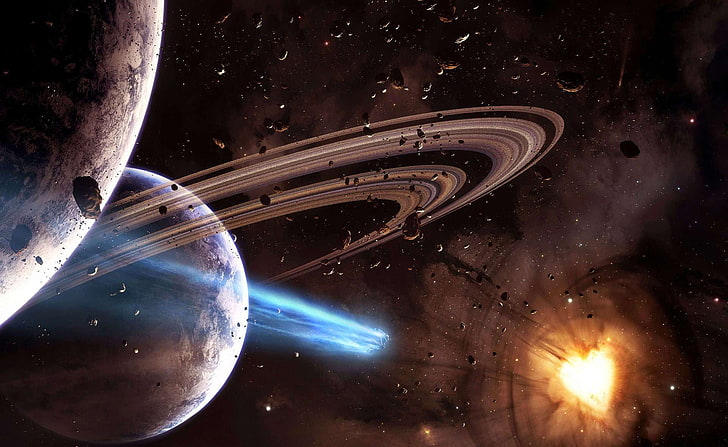

Saturno possui 9 vezes o tamanho do planeta Terra e é formado principalmente por gases. Dispõe de 7 conjuntos de anéis circundantes e 82 luas, como Titã, a maior e mais conhecida. Saturno é o sexto planeta a partir do Sol e é o segundo maior planeta do Sistema Solar
